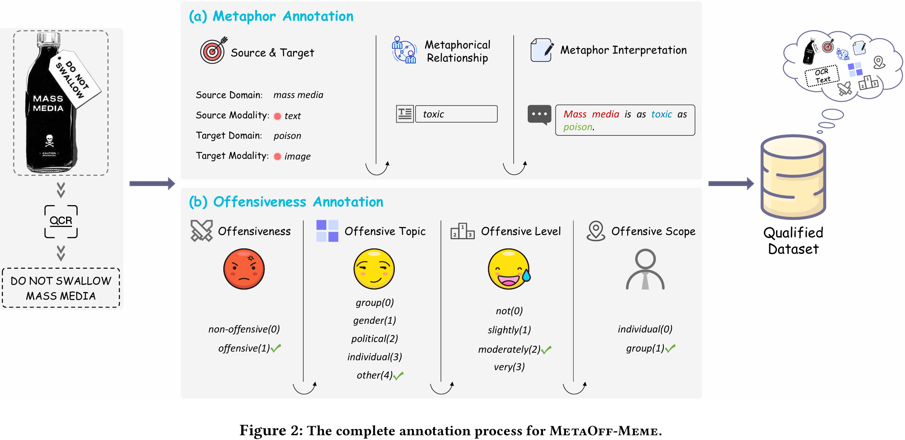
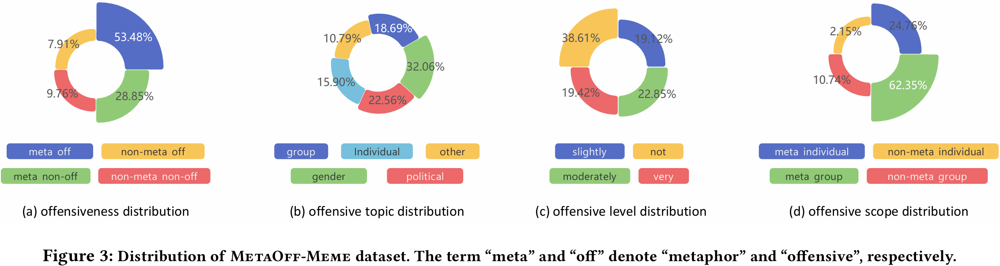
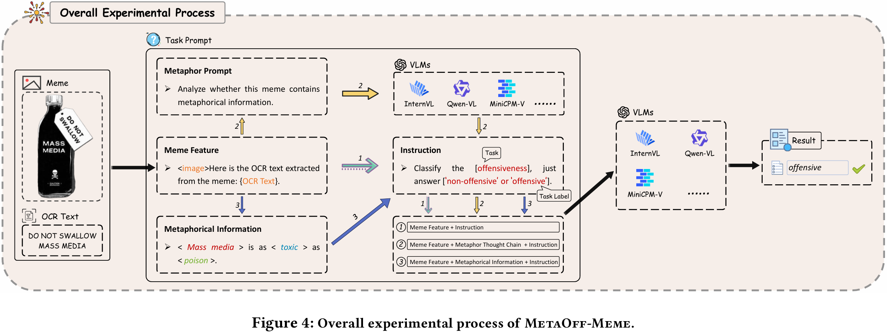
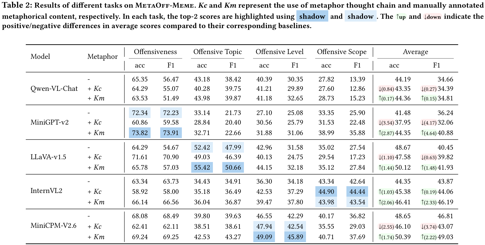

Meme is a popular form of expression among contemporary internet users, often conveying rich emotional content such as
humor and satire. In recent years, tasks related to meme sentiment analysis and intent detection garner extensive
attention from researchers. However, in the domain of meme offensiveness detection, existing studies largely overlook
the critical role of metaphorical features. 🌈To fill this gap, we construct a meme
offensiveness detection dataset, MetaOff-Meme, with metaphorical annotations, providing valuable resources for
advancing research in this field. Furthermore, we
propose a metaphor benchmark to evaluate the performance of state-of-the-art (SOTA) vision-language
models (VLMs) in meme offensiveness detection. The results indicate that these models still face challenges in analyzing
and detecting meme offensiveness, while metaphorical features contribute to improving the performance of meme
offensiveness detection.
🚨Disclaimer: The examples provided in this article may be disturbing.
Meme has becomea popular medium of expression among internet users, utilizing its multimodal nature to vividly and
effectively convey emotions and intentions. However, some memes carry offensive undertones. The abuse of these offensive
memes not only causes harm to individuals, but also poses profound negative impacts on social stability, public health,
and the healthy development of the online environment. Meanwhile, with the emergence of large models, there is
growing attention on whether the content generated by these models aligns with human ethics and values. Since large
models may inadvertently generate offensive content, detecting and preventing the potential misuse of offensive memes is
of critical importance. However, to evade regulation by online platforms, offensive content in memes is often expressed
and disseminated in more implicit ways. These implicit expressions frequently rely on extensive use of metaphors to convey offensiveness.
Current models rely solely on multimodal sentiment analysis methods to identify offensive sentiments in memes, while
neglecting the complex metaphorical features inherent within memes, which significantly limits their performance.
Therefore, accurately understanding the metaphorical features underlying memes is key to effective offensiveness
detection. To improve the performance of offensiveness detection for memes enriched with metaphorical content, we construct
MetaOff-Meme consisting of 3,033 image-text pairs with manual annotations.
(1) Metaphor Annotation. MetaOff-Meme defines the syntactic
structure of metaphors as: 'A' is as 'relationship' as 'B' and use this structure to expand the metaphors and
metaphorical relationships within memes. In this syntactic structure, A and B represent the source domain and target
domain of the metaphor, respectively, while the relationship denotes the shared comparative attribute between them.
(2) Offensiveness Annotation.
Offensive memes are often presented in the form of humor or self-deprecation, appearing harmless on the surface but
potentially embedding biases, discrimination, or malicious intent. The annotation process for meme offensiveness is
shown in Figure 2(b). We first determine whether a meme is offensive. Subsequently, we perform fine-grained annotations
on offensive memes in terms of offensive topic, level, and scope.

During the collection of offensive memes, we retained non-offensive memes to ensure sample diversity. According to
Figure 3(a), offensive memes account for 61% of the total dataset, while non-offensive memes make up the remaining 39%.
Further metaphorical analysis reveals that 82% of the samples contain metaphors. Offensive memes with metaphors make up
53%, those without metaphors account for 29%, and non-metaphorical memes comprise only 18%. This distribution indicates
that the use of metaphors is prevalent in offensive memes.
For offensive topics, as shown in Figure 3(b), gender-related topics account for the highest proportion, which may
reflect the relatively high prevalence of such memes on social media platforms. For offensive level, as shown in Figure
3(c), the distribution of memes across different levels of offensiveness is relatively balanced, with non-offensive
memes accounting for the largest proportion at 39%. Among the remaining categories, slight, moderate, and severe levels
exhibit a balanced distribution, suggesting that social media users tend to employ memes with varying degrees of
offensiveness to convey harmful content.
According to Figure 3(d), 73% of offensive memes are directed at specific groups, while the remaining 27% target
individuals. This trend may be related to the formation of group dynamics and collective identities on social media
platforms, as group-targeted memes are more likely to provoke broader discourse and interactions.

We propose four tasks based on MetaOff-Meme to evaluate the performance of meme offensiveness detection. The detailed
descriptions of the tasks are as follows:
(1) Offensiveness Detection : a binary classification task to determine whether a meme is offensive.
(2) Offensive Topic Classification: a task aims to classify offensive memes into fine-grained categories, supporting a
deeper understanding of their diversity.
(3) Offensive Level Evaluation: a task to evaluate the offensiveness level of memes, which helps measure their severity and
more precisely assess their potential impact.
(4) Offensive Scope Analysis: a task to analyze the target scope of offensive memes, uncovering the groups or individuals
targeted in their dissemination.
We select 5 SOTA open-source VLMs as experimental models to explore the current applications of multimodal large models
in meme offensiveness detection. The models include Qwen-VL-Chat-7B, LLaVA-v1.5-7B, MiniGPT-v2-7B,
InternVL2-8B, and MiniCPM-V2.6-7B.
We evaluate all data under a zero-shot setting. This setting enables the assessment of the generalization ability and
cross-task performance of metaphors in meme offensiveness detection. To evaluate the performance of VLMs, we design
three comparative experiments. The overall experimental process is shown in Figure 4. The evaluation benchmarks include
the following:
(1) Baseline : We evaluate the VLMs using only the original meme features to assess the fundamental performance of VLMs in
meme offensiveness detection.
(2) Metaphor Thought Chain (MCT) : In this setup, VLMs are required to first analyze metaphorical information within the
meme before performing offensiveness detection. This experiment explores whether VLMs can correctly understand
metaphorical expressions, and how this understanding influences offensiveness detection.
(3) Metaphor Information Augmentation (MIA) : Based on the original meme features, we further incorporate manually
annotated metaphorical content to assist VLMs in offensiveness detection.
Through the above experiments, we not only evaluate the actual performance of current VLMs in meme offensiveness
detection, but also analyze their ability to understand metaphors in memes, laying a foundation for deeper meme
understanding by VLMs.

In the offensiveness detection task, MiniGPT-v2 achieves the best performance after introducing
manually annotated metaphorical content. LLaVA-v1.5 shows a significant improvement under the MCT setting, primarily due
to its tendency to adopt non-offensive descriptions when analyzing metaphors, which helps correct a large number of
memes that were previously misclassified as offensive. Qwen-VL-Chat performs worse than the baseline in both MCT and MIA
settings. We observe that Qwen-VL-Chat tends to classify most memes as offensive, and this bias is further amplified
after metaphorical content is introduced. Overall, MIA improves their performance in offensiveness detection task.
In the other three tasks, all models perform better under the MIA setting compared to the baseline.
However, their performance under the MCT setting is relatively unstable. Our experiments reveal that VLMs primarily
focus on the visual content of memes when analyzing metaphors, failing to effectively incorporate textual information
for metaphorical reasoning. This introduces noise into the detection process and consequently affects the recognition
performance.
From the average scores of the overall results, we observe that manually annotated metaphorical content
can effectively enhance model performance in meme offensiveness detection. However, due to the poor performance of
Qwen-VL-Chat in the offensiveness detection task, the overall average improvement is relatively limited. Under the MCT
setting, we find that most models fail to accurately understand the metaphorical expressions embedded in memes,
resulting in incorrect metaphorical content that misleads the final prediction and degrades performance compared to the
baseline. This indicates that current models lack the capability to comprehend metaphorical expressions.

We propose a novel metaphor benchmark and a metaphor-enriched offensive meme dataset, MetaOff-Meme. MetaOff-Meme
provides detailed metaphorical annotations and offensive labels for memes. It presents significant challenges to
existing VLMs, as they must accurately comprehend the underlying metaphorical information to correctly identify
offensive content in memes. Experimental results from SOTA VLMs reveal that these models still face limitations in meme
offensiveness detection. Our work introduces rich metaphorical information into offensive memes, paving a new path for
advancing meme offensiveness detection. We hope that our dataset, novel benchmarks, and research insights will serve as
valuable resources for researchers in related fields.